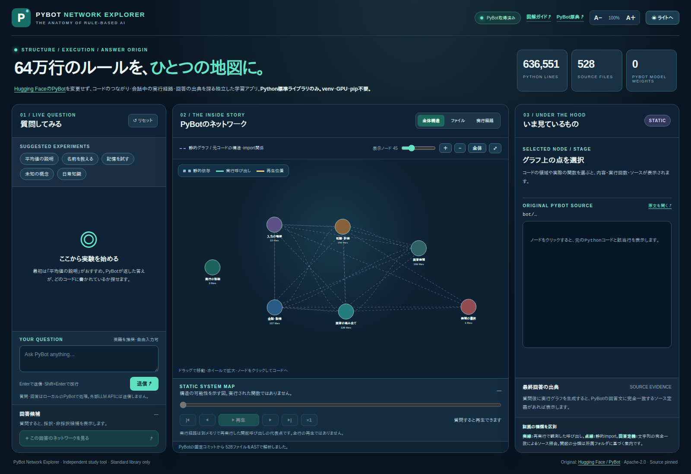
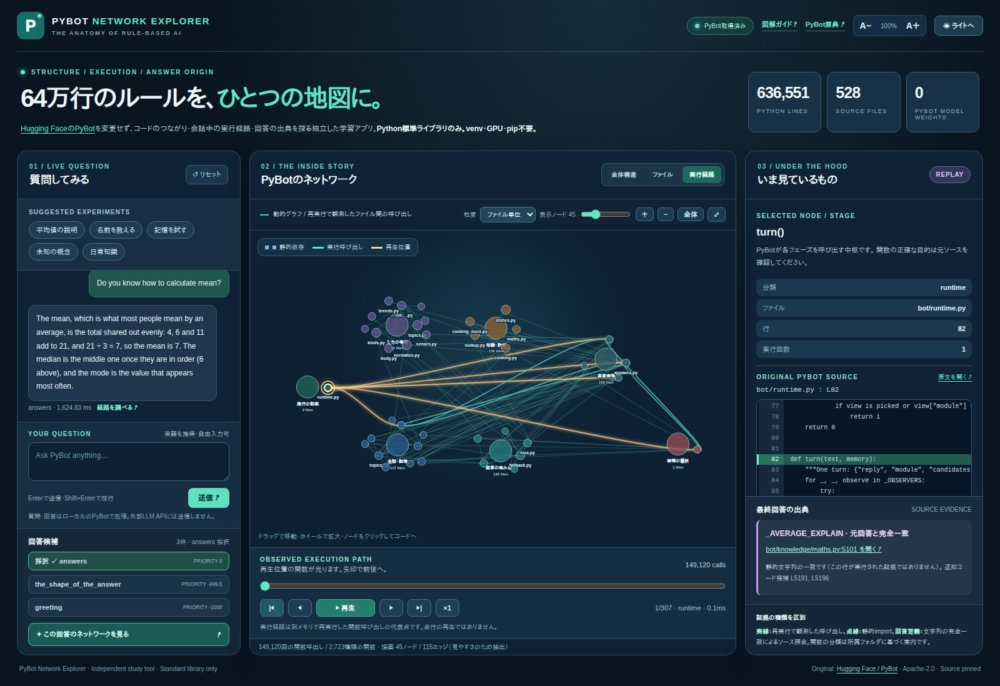

↓
ダウンロード
このリポジトリで Code → Download ZIP。展開したフォルダを開きます。
会話の裏で何が呼ばれ、どこから回答が来たのか。グラフを動かして、コードを開いて、考察する。
MacとWindowsを一つのコードで対応します。Python 3.8以上が必要ですが、仮想環境や追加パッケージは不要です。初回のみ元PyBotのソースを安全に取得します。
このリポジトリで Code → Download ZIP。展開したフォルダを開きます。
Macは start_mac.command、Windowsは start_windows.bat をダブルクリック。
会話・グラフ・ソース表示が一画面で使えます。終了する場合はターミナルを閉じるかCtrl+C。
./start_mac.commandPython.org版で証明書エラーが出る場合は、OSの信頼済み証明書で安全に再試行します。SSL検証は無効化しません。start_windows.batPythonランチャー（py）を優先します。社内ネットワークでは初回取得制限に注意してください。左で質問、中央のネットワークで内部を観察、右で実コードを確認。メニューや説明を覚えるより、まず実験します。

例題を選ぶか英語で入力。PyBot純正の返信と複数の回答候補を表示。
全体構造・ファイル・実行経路を切替。ノードを拡大して辿れます。
クリックで元のPythonソースを読み、行番号と回答定義を確認できます。
「平均値の説明」を押して質問 → 「この回答のネットワークを見る」。再実行で観測した関数呼び出しをグラフに重ねます。

「Do you know how to calculate mean?」では、PyBotの answers モジュールが候補を出し、平均値の説明文そのものが bot/knowledge/maths.py に _AVERAGE_EXPLAIN として定義されています。
見た目が似ていても、実際に通過した呼び出しと「コード上つながり得る」ことは違います。この区別が実験の信頼性を支えます。
PythonのASTから抽出したimport・ファイル所属関係。コード構造の地図であり、今回実行した証拠ではありません。
sys.setprofile で別メモリの再実行中に観測。線の太さは呼び出し回数の参考値です。
元の英語回答と完全一致する文字列定数を検索します。回答の出所の候補であり、通過行だと断定しません。
観測した関数の線は、同じ質問と会話履歴を別のメモリで再生したもの。採択モジュールまたは回答が異なる場合は画面に警告を表示します。また、関数を呼んだことは、その関数が「答えを決めた」証明ではありません。
質問前に「全体構造」。runtime・memory・knowledge・compose・modules・arbiterがどう分かれているかを確認。
平均値・記憶・日常知識。PyBot純正の候補を観察して、次に通る経路を予想。
再生バーで実行ノードを光らせ、知識辞書・回答候補のモジュール・回答定義を見て議論。
「知識をどこに保持するか」「未知入力にどう対応するか」「計算量と説明可能性」を比較。
「大きな脳が文章を書いている」ように見えても、実際には多くのルール群が候補を作り、選択器が決めています。
静的依存と動的call graph、優先度と選択器の役割、再実行の一致率、実行回数と回答への因果寄与の違いを検討します。
元のPyBotと、このNetwork ExplorerのPythonバックエンドは追加pipライブラリを使わず、標準ライブラリのみで動く構成です。画面はブラウザ内蔵SVGとJavaScriptで描画しています。GPU・学習済みのモデル重みは使いません。
インターネット接続が必要です。Python.org版のMacでSSL証明書エラーが出た場合は、OS標準のcurlで証明書検証を維持したまま再試行します。失敗が続くときは、Finder → アプリケーション → Pythonのバージョンのフォルダ → Install Certificates.command を実行して確認してください。
何万回もの実行を全部描くと読めなくなります。画面は主要なノード・エッジと時系列の代表点を抽出しています。全体の関数呼び出し件数や省略数はAPIに記録されています。意味的な寄与のランキングではありません。
選んだ表示数に含まれないノードの接続は省略します。表示ノード数のスライダーを増やしてみてください。ノードの所属から処理の大まかな役割を解説しており、未観測のエッジを補完することはありません。
いいえ。Hugging FaceのPyBotは固定コミットで取得し、そのまま実行します。Graph Explorerは観測・グラフ描画のための独立コードです。元PyBotはApache License 2.0です。